Harmonização começa pela pele
Harmonização facial no Instituto Faciere, em Barueri, com a Dra. Jéssica Amaral: leitura do rosto e da pele antes de qualquer aplicação.
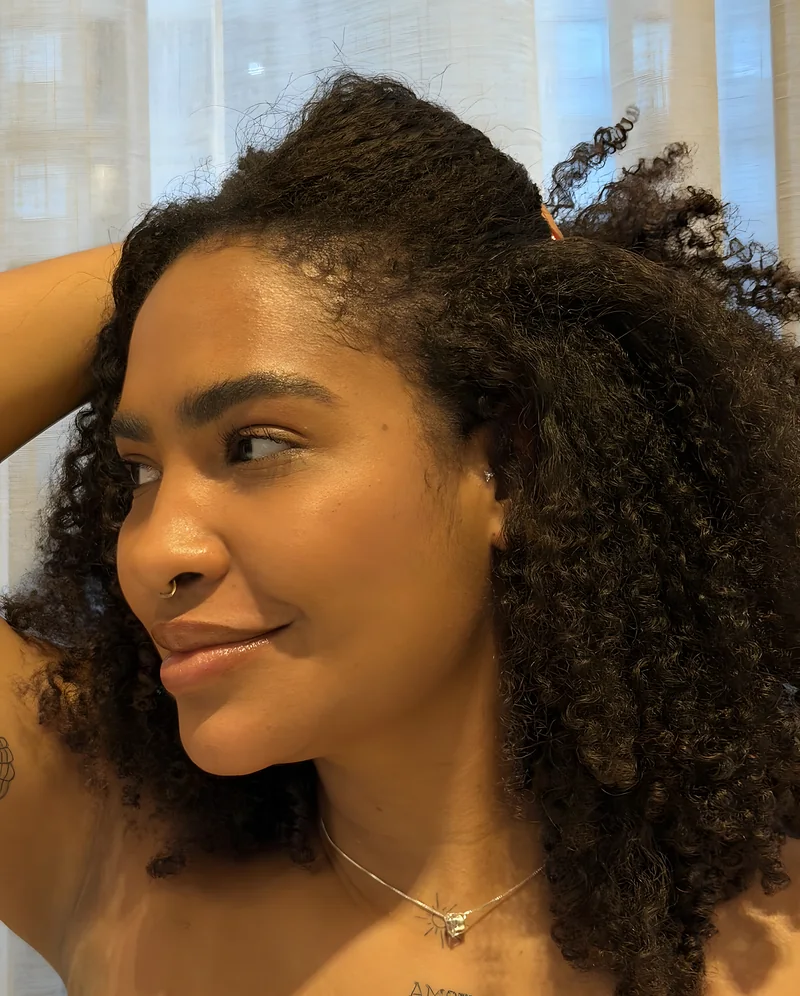
O que te incomoda no espelho?
Toque nos pontos da foto ou nas opções abaixo. Sua escolha vai junto na mensagem, e a avaliação já começa com o que importa para você.
Nada marcado ainda. Tudo bem também: a avaliação olha o rosto inteiro.
Enviar para a Dra. no WhatsAppUm plano para o rosto inteiro
-
Harmonização full face
Olhar, malar, lábios e contorno planejados juntos, em etapas, para o rosto continuar sendo seu.
Quero avaliar o full face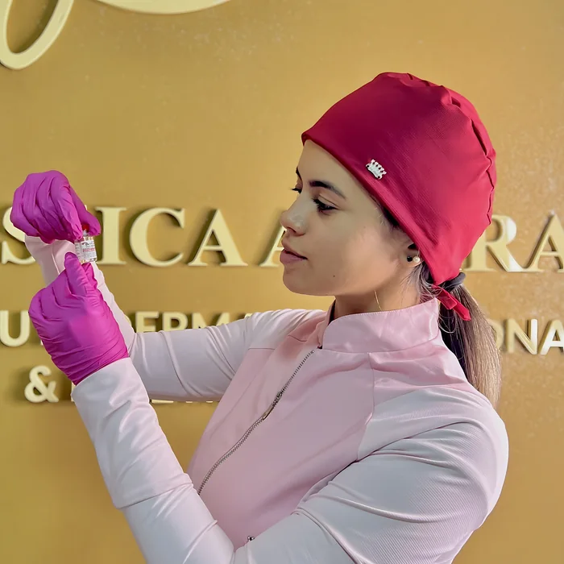
-
Contorno, nariz e lábios
Mandíbula, queixo e papada definidos; nariz e lábios ajustados na medida. Sem o queixo pontudo que denuncia.
Quero avaliar o contorno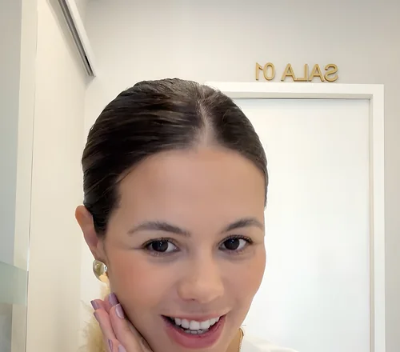
-
Bioestimuladores de colágeno
Firmeza que se constrói aos poucos, de dentro para fora. Colágeno, não arrependimento.
Quero avaliar bioestimulador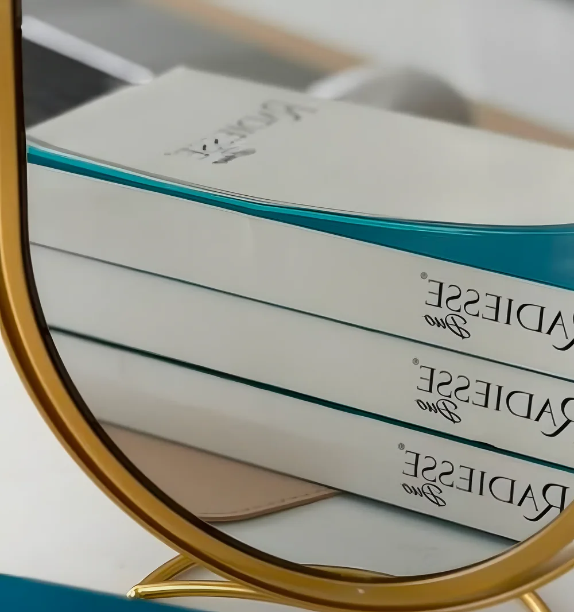
-
Pele
Peelings e protocolos para textura, manchas e viço. É a base de todo resultado bonito.
Quero cuidar da pele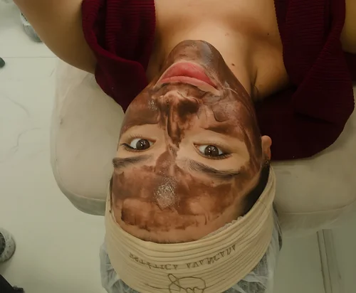
Também na clínica: toxina botulínica, preenchimento de bigode chinês e marionete, lipo de papada, criolipólise, limpeza de pele, peeling herbal e depilação a laser.
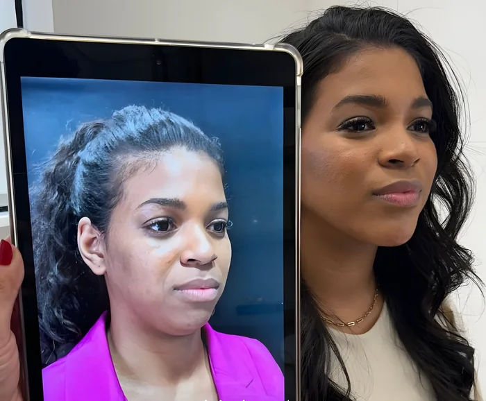
Análise facial por fotografia
O rosto é fotografado e comparado lado a lado no tablet, antes e depois de cada etapa.
Leitura de ângulos e proporções
Terços do rosto, perfil e ângulos da mandíbula medidos para decidir onde, e se, aplicar.
Bioestimulador de hidroxiapatita
Radiesse para estimular colágeno, com efeito gradual e natural.
Laser e criolipólise
Depilação a laser e criolipólise para gordura localizada, além dos protocolos de rosto. [A DEFINIR: modelo dos aparelhos]
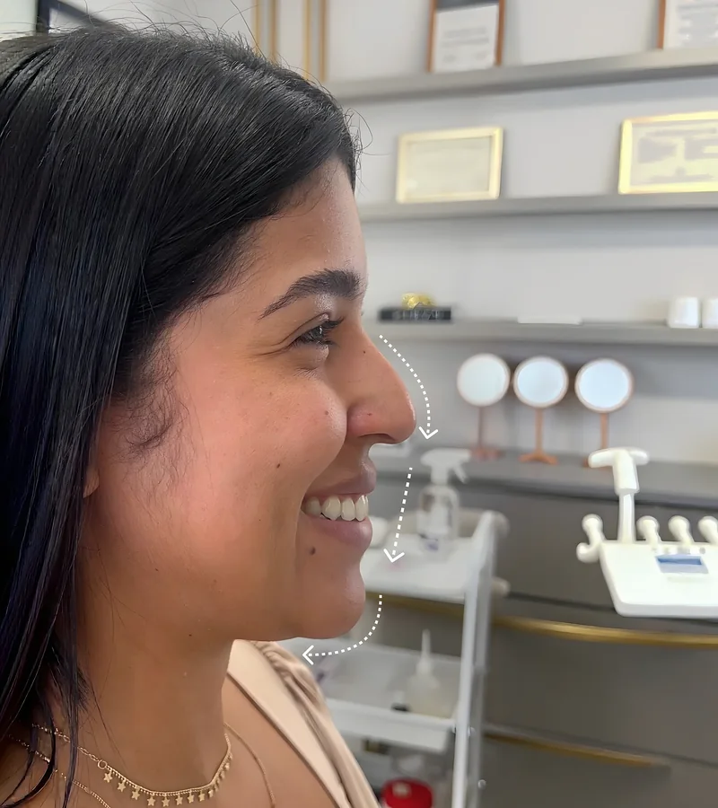
Cada ponto aplicado tem um motivo medido. É assim que 15 ml viram três transformações, e não um rosto diferente.
Leitura de perfil feita na sala de atendimento do Instituto Faciere.
Antes e depois, sem exagero
Arraste a linha de cada foto. A diferença está no equilíbrio, não no volume.
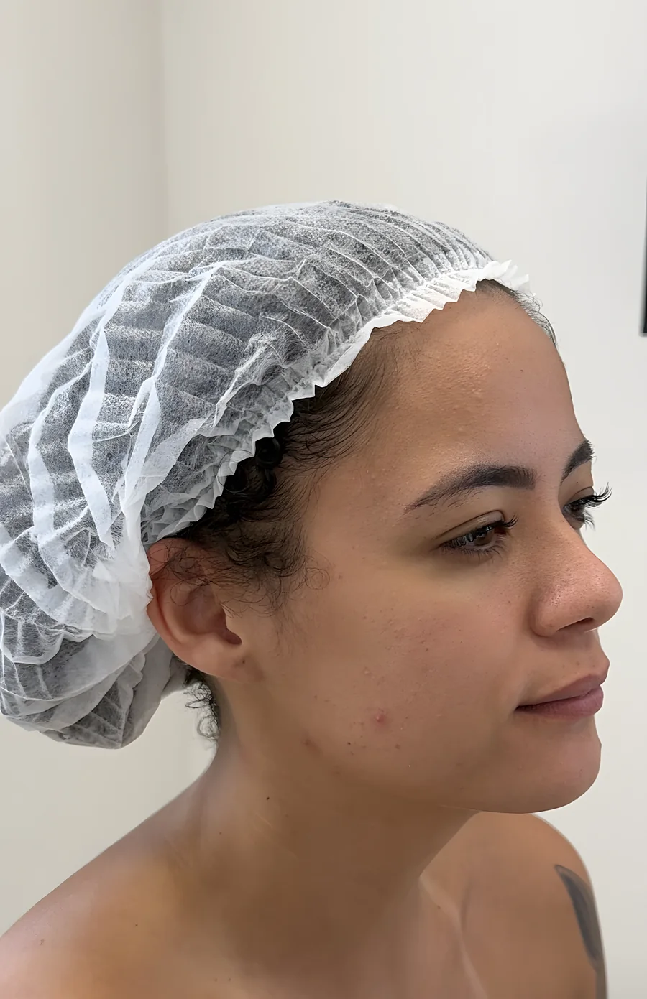
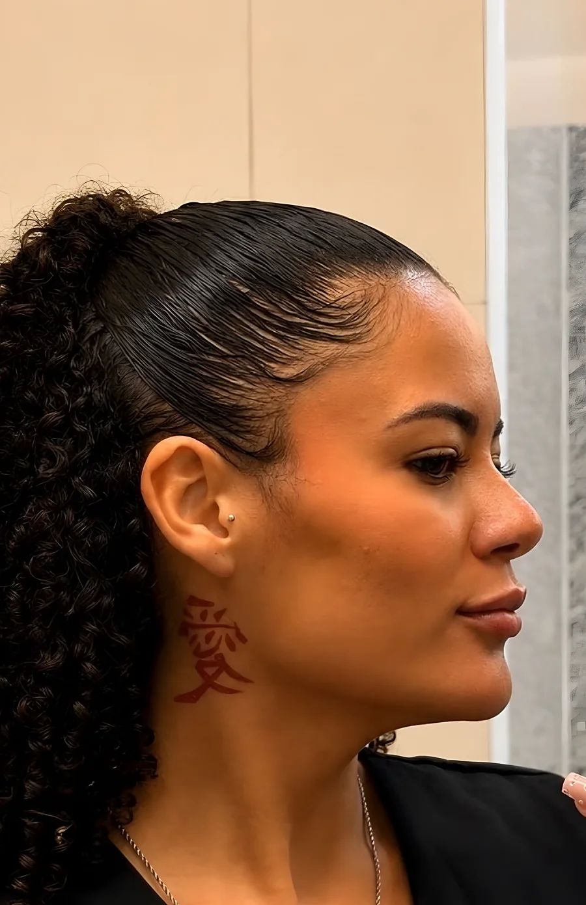
AntesDepois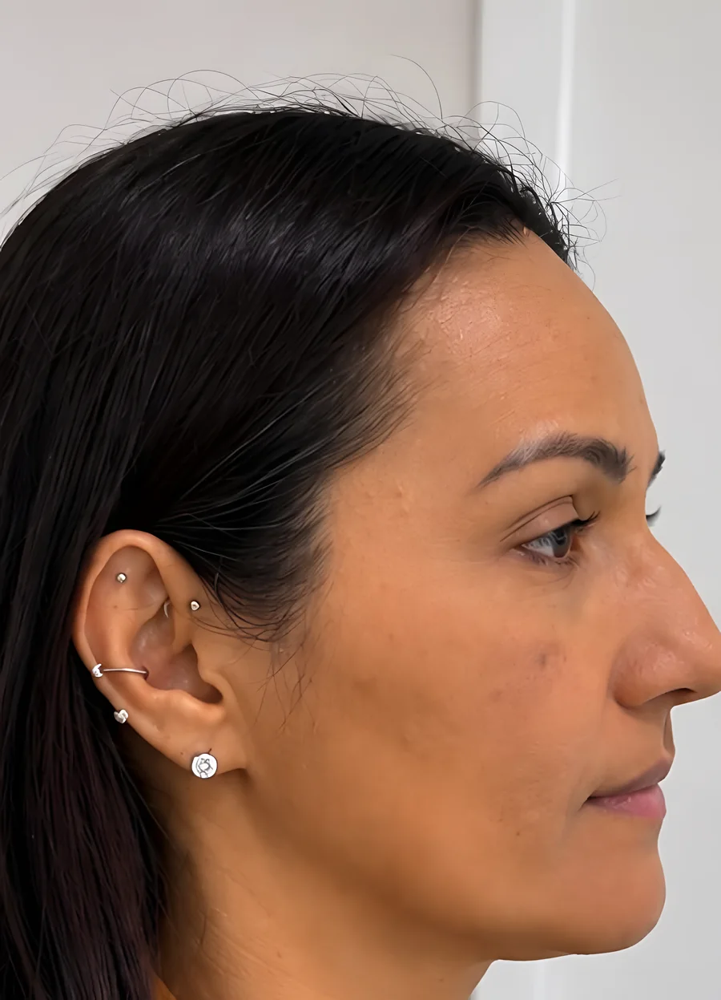
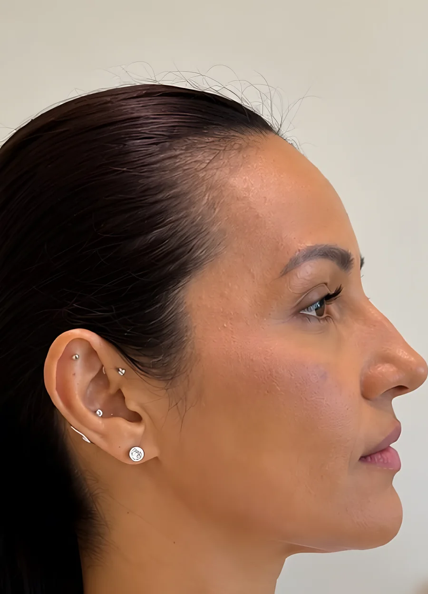
AntesDepois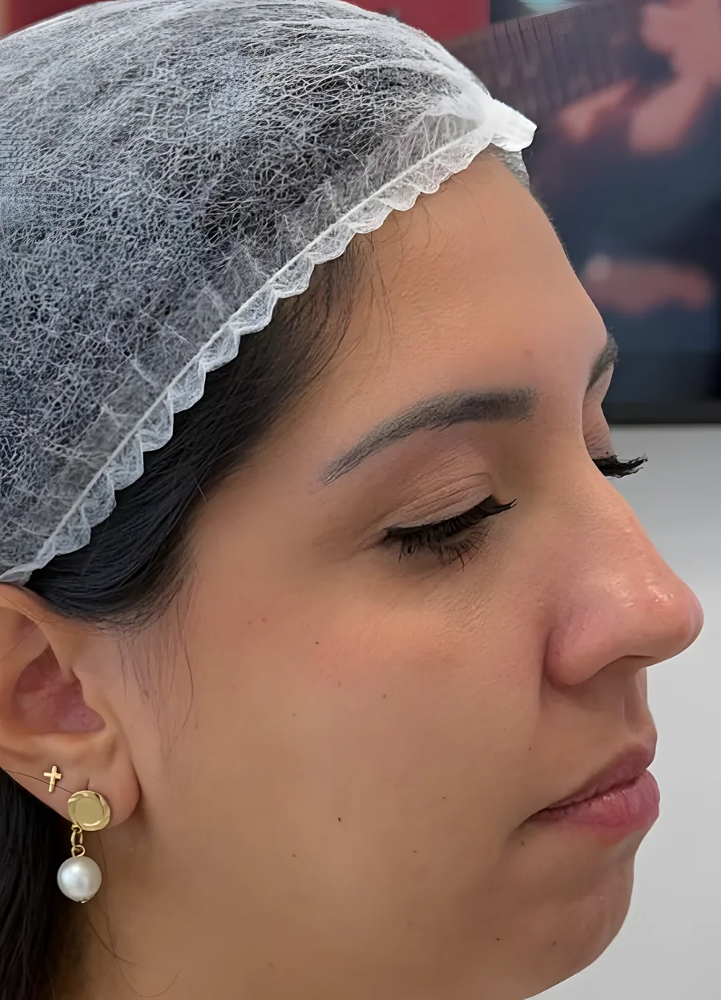
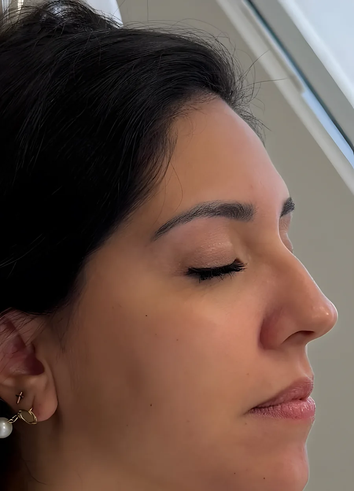
AntesDepoisFotos autorizadas pelas pacientes. Cada organismo responde de um jeito; o resultado esperado para o seu caso é explicado na avaliação.
5,0 no Google, com 366 avaliações
★★★★★
“Minha experiência na clínica é sempre excelente! Faço meu Botox anualmente e sou muito satisfeita com o atendimento e os resultados.”
Inajara S. · Google
★★★★★
“Um carinho especial pela Dra. Jéssica, uma profissional excepcional. Admiro muito seu trabalho, sua dedicação, atenção e todo o cuidado.”
Amanda V. · Google
★★★★★
“Amei tudo, desde o atendimento da recepção até o procedimento com a doutora!”
Paciente · Google
Como funciona
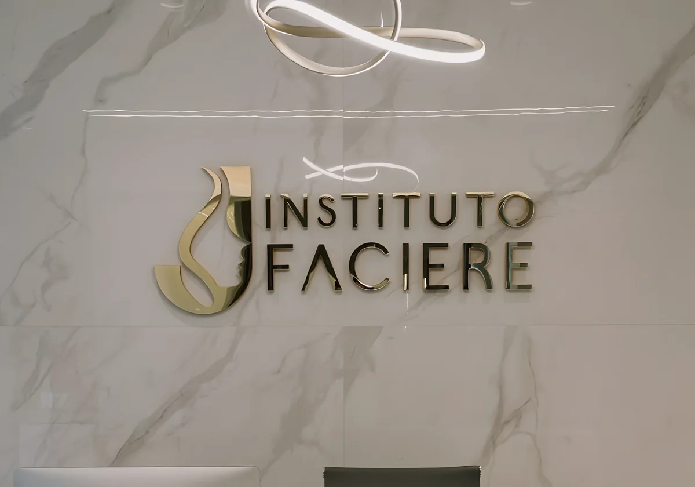
Primeiro passoVocê chama no WhatsApp, escolhe o dia e chega a um espaço feito para relaxar. Café, água ou um drink.
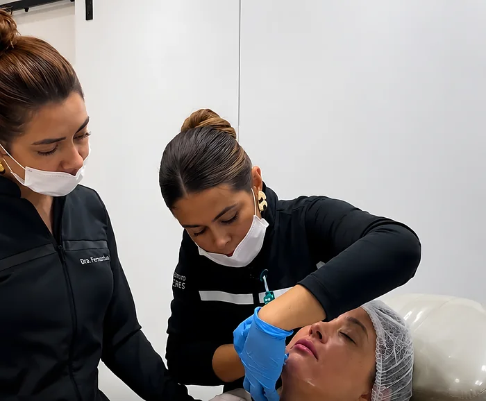
Na avaliaçãoFotos, leitura do rosto e da pele, e um plano por etapas explicado antes de qualquer aplicação.
DepoisRetornos marcados e novas fotos para comparar a evolução, com a mesma equipe.
- Barueri, SPCentro, perto de Alphaville
- Desde 2021Instituto Faciere
- CREFITO319827-F
Quem cuida de você
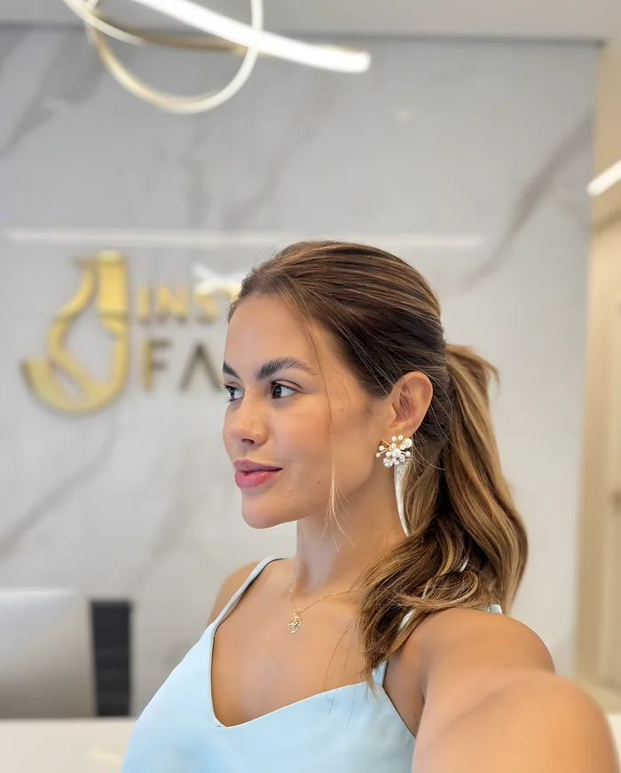
Mãe, empresária e paciente da própria filosofia. [A DEFINIR: formação]
Mentoria para profissionais
Saber aplicar é só uma parte. A mentoria da Jéssica junta o que transforma uma profissional de verdade.
- Técnica: planejamento facial e anatomia, na prática.
- Segurança: prevenir, identificar e resolver intercorrências.
- Posicionamento: comunicação, preço e autoridade no digital.
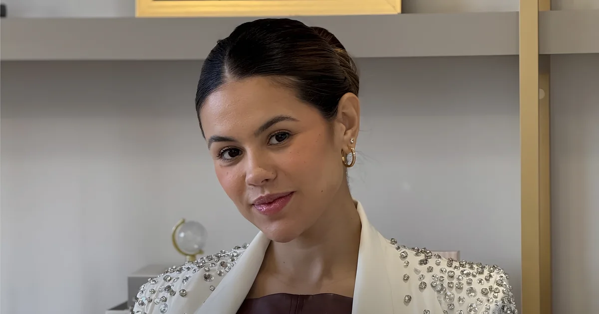
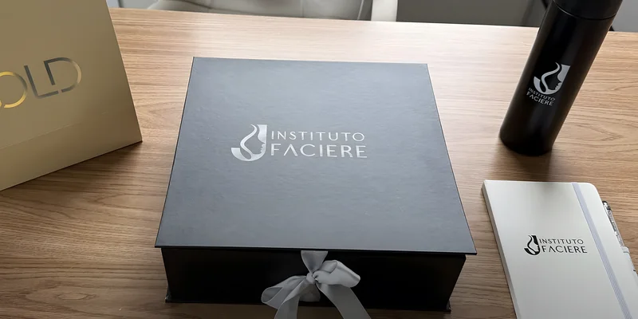
Antes da primeira consulta
A harmonização vai deixar meu rosto artificial?
A proposta é o contrário: realçar o que já é seu. O planejamento respeita as proporções do seu rosto, e a quantidade de produto é sempre a necessária, nunca a máxima.
Como é a primeira consulta?
Fotos do rosto, análise da pele e das proporções, conversa sobre o que te incomoda e explicação do plano. Valor da avaliação: [A DEFINIR].
Quanto custa?
Depende do plano de cada pessoa. Valores e formas de pagamento são apresentados na avaliação, já com o que faz sentido para o seu caso.
Dói? Preciso ficar de repouso?
O conforto é prioridade. Na avaliação a Dra. explica cada etapa, o que você pode sentir e os cuidados depois do procedimento.
Quanto tempo dura o resultado?
Varia conforme o procedimento, o produto e o seu organismo. Na avaliação você recebe a previsão para o seu caso e o calendário de retornos.
Tem estacionamento?
[A DEFINIR] A clínica fica na Rua Campos Sales, 303, sala 23, Vila São João, Barueri (CEP 06401-000).
Agendar ou perguntar?
As duas abrem o WhatsApp da clínica, com a mensagem já escrita.